Guía de Byrna: Espíritu Oso Sanador | Hero Wars Alliance
- By: Alexandre Domingos. .
¡Bienvenido, Guardián! ¿Estás listo para comandar a una sanadora tan feroz como compasiva? Conoce a Byrna, la Sanadora del Camino de la Naturaleza que canaliza el poder salvaje y protector de lo indómito para cambiar el curso de la batalla. Antigua campeona de los orcos, lucha no solo para curar heridas, sino para purificar el mismo control de los señores demoníacos. Su sinergia con un formidable Gran Espíritu de Oso la convierte en algo más que un simple apoyo: la transforma en una auténtica potencia estratégica.
Olvida la sanación pasiva; el rugido de Byrna no solo otorga energía y elimina efectos, ¡también inflige un daño masivo! Sumérgete en esta guía definitiva para conocer sus secretos, dominar sus habilidades y descubrir las composiciones de equipo que harán que su sanación libere todo el potencial de tu alianza.

¿Quién es Byrna en Hero Wars Alliance?
Byrna es una Sanadora dedicada de la facción Camino de la Naturaleza, posicionada en la Línea Media. Impulsada por la misión de liberar a los orcos, es una aliada crucial que combina una poderosa sanación y la limpieza de desventajas con un daño sorprendentemente alto proveniente de su espíritu de oso.
- Clase de Glifo: Sanadora
- Posición: Línea Media
- Atributo Principal: Inteligencia
- Facción: Camino de la Naturaleza
- Cómo obtener Piedras de Alma: (Solo en eventos especiales)
- Sinergia: Mushy, Alvanor, Mojo, Soleil, Maya
- Clasificación en Hidra: (Por completar con su valoración/rendimiento en Hidra)
La función principal de Byrna es mantener a su equipo con vida proporcionando sanación explosiva y otorgando la tan necesaria Energía. Su habilidad característica, invocar al Espíritu Guardián, no solo desata un rugido devastador contra los enemigos, sino que también ofrece inmunidad esencial al control de masas al eliminar los efectos de Control de los aliados. Esto la hace invaluable contra equipos cargados de aturdimientos, silencios y otros efectos incapacitantes.
Como heroína de Inteligencia, invertir en su atributo principal aumenta tanto su capacidad de sanación como su daño mágico, convirtiéndola en un apoyo de doble amenaza capaz de mantener saludable a la primera línea mientras contribuye al daño total del equipo.
Pros y Contras de Byrna - Hero Wars (Móvil)
✅ Pros
- Acumulación de Supervivencia Inigualable: Su habilidad pasiva, Corazón Viviente, proporciona aumentos permanentes de Salud Máxima durante la batalla, haciendo que todo su equipo sea significativamente más resistente con el tiempo.
- Utilidad Doble: Combina sanación explosiva (Rugido de la Naturaleza) con daño persistente (Golpe del Guardián), asegurando una contribución tanto ofensiva como defensiva.
- Limpieza de Control de Masas (CC): Sus mejoras de Reliquia Legendaria (en Rugido de la Naturaleza y Abrazo del Oso) proporcionan una limpieza crucial de efectos negativos, tanto a todo el equipo como a un solo objetivo, contrarrestando eficazmente a los equipos de control.
- Escala Excepcionalmente Bien: Todas sus habilidades principales escalan con Ataque Mágico, lo que significa que invertir en su skin y artefactos de Inteligencia ofrece grandes beneficios en todo su kit (sanación, daño y acumulación de Salud).
- Sinergia de Energía: Proporciona Energía a los aliados mediante Abrazo del Oso y la mejora de reliquia de Corazón Viviente, acelerando las habilidades definitivas de sus compañeros.
❌ Contras
- Vulnerable al Daño Explosivo: Aunque acumula salud de forma permanente, puede ser susceptible a enemigos que infligen un daño explosivo alto y rápido al inicio del combate, impidiéndole comenzar la acumulación de Corazón Viviente.
- La Sanación Depende del Ataque Mágico: Toda su eficacia de apoyo depende de su estadística de Ataque Mágico. Si es fuertemente debilitada (por ejemplo, reducción de Ataque Mágico), su sanación cae drásticamente.
- Posicionamiento en la Línea Media: Como heroína de línea media, a menudo queda expuesta a ataques de AoE (Área de Efecto), lo que hace que el Glifo/Skin de Salud sea absolutamente esencial para su supervivencia.
- Bajo Impacto Inicial: Su mayor fortaleza (la acumulación permanente de Salud) requiere tiempo para desarrollarse. Es menos efectiva en batallas extremadamente rápidas o contra equipos diseñados para ganar en los primeros 10–15 segundos.
Byrna — Comparação de Stats Máximos do Talismã
| Atributo | Talismã Bearocious | Talismã da Princesa Orc |
|---|---|---|
 Inteligência Inteligência
|
15.558
|
17.558
|
 Agilidade Agilidade
|
3.549
|
3.549
|
 Força Força
|
4.154
|
4.154
|
 Saúde Saúde
|
898.279
|
898.279
|
 Ataque Físico Ataque Físico
|
31.496
|
33.496
|
 Ataque Mágico Ataque Mágico
|
167.436
|
173.436
|
 Armadura Armadura
|
21.777
|
9.777
|
 Defesa Mágica Defesa Mágica
|
33.909
|
35.909
|
 Resistência Resistência
|
2.790
|
2.790
|
 Reflexão Mágica Reflexão Mágica
|
6.600
|
—
|
 Penetração Mágica Penetração Mágica
|
24.488
|
44.288
|
Prioridad de Mejora de las Habilidades de la Reliquia Legendaria de Byrna - Hero Wars Alliance
¿Listo para comandar el poder de lo salvaje? ¡Byrna es una fuerza estratégica de la naturaleza que cura, inflige daño y aumenta la supervivencia de tu equipo! Saber qué habilidades subir primero es la clave para hacer que su espíritu de oso sea imparable. Esta guía desglosa cada habilidad, explicando el “por qué” detrás de cada prioridad.
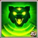
1.º – Rugido de la Naturaleza
¡Esta es la Habilidad Definitiva de Byrna y su momento de mayor impacto! El Espíritu Guardián desata un rugido masivo que actúa como una poderosa habilidad dos en uno: inflige una enorme cantidad de Daño Mágico a los enemigos Y restaura una cantidad significativa de Salud a Byrna y a los aliados cercanos.
Este es tu gran “botón de pánico” tanto para daño como para sanación. El Daño Mágico infligido es de 148321, calculado como: (85% Atq. Mág. + 6000). La regeneración de Salud es del 50% del cálculo total.
¿Por qué mejorarla? Esta habilidad es el mayor estallido de sanación y daño que ofrece Byrna. Maximizarla garantiza que su supervivencia y contribución al equipo aumenten drásticamente cuando ruge el Espíritu Guardián.
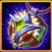
Fórmula de Rugido de la Naturaleza con el Talismán de la Bearocious
- Fórmula: Daño Mágico: 148321 (85% Atq. Mág. + 6000)
- Fórmula: Regeneración de Salud: 50%
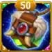
Fórmula de Rugido de la Naturaleza con el Talismán de la Princesa Orco
- Fórmula: Daño Mágico: 153421 (85% Atq. Mág. + 6000)
- Fórmula: Regeneración de Salud: 50%
Información de la Animación de la Habilidad
- Palabras clave: No se puede copiar
- Retraso de animación: 0.5 segundos
- Área: 150
- Alcance: 400
- Impactos: 50
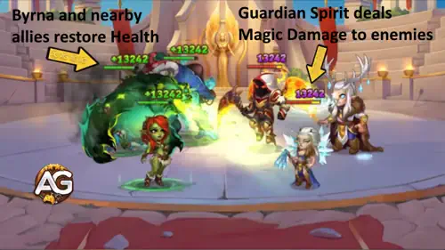
Prioridad de Evolución: Muy Alta (1.ª en General) – Tu principal fuente de sanación y daño debe maximizarse primero para un rendimiento constante.
2.º – Golpe del Guardián
Esta habilidad define la rutina básica de combate de Byrna. El Espíritu Guardián se desplaza por el campo de batalla atacando a los enemigos. El espíritu no puede ser seleccionado como objetivo y hereda el Ataque Mágico y la Penetración Mágica de Byrna. Además, los ataques básicos normales de Byrna ahora restauran Salud y Energía al aliado con menor Salud. El Daño Mágico infligido por el espíritu es de 334872, calculado como: (200% Atq. Mág.). La regeneración de Salud por ataque es de 176436, calculada como: (Atq. Mág. + 9000). La ganancia de Energía es fija en (100).
¿Por qué mejorarla? Esta habilidad aporta daño constante, pero la sanación es una cantidad plana menor en comparación con otras habilidades. Dado que la fortaleza de Byrna es la utilidad y la acumulación de estadísticas, esta habilidad orientada al daño tiene menor prioridad.
Fórmula de Golpe del Guardián con el Talismán de la Bearocious
- Fórmula: Daño Mágico: 334872 (200% Atq. Mág.)
- Fórmula: Regeneración de Salud por Ataque: 176436 (100% Atq. Mág. + 9000)
- Fórmula: Regeneración de Energía por Ataque: 100
Fórmula de Golpe del Guardián con el Talismán de la Princesa Orco
- Fórmula: Daño Mágico: 346872 (200% Atq. Mág.)
- Fórmula: Regeneración de Salud por Ataque: 182436 (100% Atq. Mág. + 9000)
- Fórmula: Regeneración de Energía por Ataque: 100
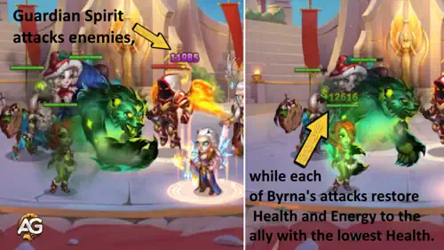
Prioridad de Evolución: Baja (6.ª en General) – Maximiza primero su sanación principal y su utilidad; el daño de esta habilidad es secundario frente a su rol de apoyo.
3.º – Abrazo del Oso
Abrazo del Oso aplica un efecto persistente (un “buff”) al aliado con menor Salud durante 20 segundos. Este aliado restaura Salud y gana Energía cada 2 segundos. ¡Piénsalo como un abrazo protector y continuo del espíritu del oso! Es una excelente herramienta de sostenimiento que mantiene con vida a un héroe vulnerable y le ayuda a cargar su Definitiva. La Salud restaurada cada 2 segundos es de 85518, calculada como: (50% Atq. Mág. + 1800). La ganancia de Energía es fija en (100).
¿Por qué mejorarla? Es una sanación continua excelente para el sustain, pero la ganancia de Energía fija y la menor sanación explosiva la hacen menos impactante que la Definitiva y la acumulación pasiva de salud.
Fórmula de Abrazo del Oso con el Talismán de la Bearocious
- Fórmula: Salud cada 2 Segundos: 85518 (50% Atq. Mág. + 1800)
- Fórmula: Energía cada 2 Segundos: 100
Fórmula de Abrazo del Oso con el Talismán de la Princesa Orco
- Fórmula: Salud cada 2 Segundos: 88518 (50% Atq. Mág. + 1800)
- Fórmula: Energía cada 2 Segundos: 100
Información de la Animación de la Habilidad
- Enfriamiento Inicial: 3 segundos
- Enfriamiento: 15 segundos
- Retraso de animación: 1 segundo
- Duración: 20 segundos
- Alcance: 3000
- Impactos: 2
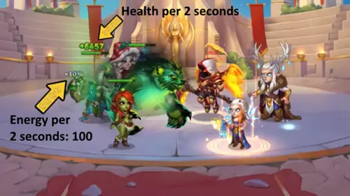
Prioridad de Evolución: Media (5.ª en General) – Una herramienta sólida de sustain, pero su naturaleza continua la hace menos crítica que la sanación explosiva y los beneficios permanentes.
En Hero Wars Alliance, cada héroe tiene una barra de Energía de 1.000 puntos. Durante las batallas, cualquier efecto que muestre “+10% de Energía” corresponde a una ganancia plana de 100 de Energía. Por eso la habilidad Abrazo del Oso de Byrna muestra una ganancia de Energía de 100 en el registro de combate: simplemente representa el 10% de la barra total de Energía.
3.º – Abrazo del Oso Legendario: Nivel de Reliquia 10
La mejora legendaria hace que el Abrazo del Oso sea aún mejor: cuando la habilidad restaura la Salud de un aliado, se eliminan todos los efectos negativos (se purgan). Esto convierte tu sanación continua en una forma constante de protección contra el control de masas para tu aliado más frágil. Aquí no hay fórmula de daño/sanación, solo la poderosa utilidad de limpiar efectos negativos.
Información de Desbloqueo de Reliquia en Nivel 10
| Información | Valor |
|---|---|
| Fragmentos de Reliquia Necesarios (Nivel 2–10) |

280
|
| Total de Fragmentos de Reliquia Necesarios (Nivel 0–10) |
330
|
| Bono Total de Ataque Mágico (Nivel 0–10) |
+11000
|
| Bono Total de Salud (Nivel 0–10) |
+56149
|
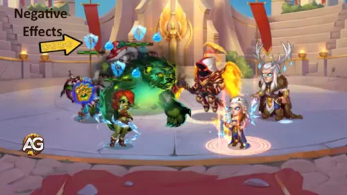
Prioridad de Evolución: Media-Alta (4.ª en General) – El efecto de limpieza es extremadamente valioso contra equipos de control, otorgándole una prioridad ligeramente mayor que la habilidad base, pero aún por detrás del enorme impacto de su Definitiva y la acumulación de Salud.
4.º – Corazón Viviente
Esta es la habilidad pasiva que cambia el juego de Byrna y garantiza que su sanación nunca se desperdicie. Si un aliado está completamente curado, la sanación de Byrna aumenta su Salud Máxima por el resto de la batalla. ¡Es como darles a tus defensores más fuertes una poción secreta y permanente de Salud cada vez que Byrna los cura! El efecto de aumento de Salud Máxima es del 100% del cálculo interno.
¿Por qué mejorarla? Esta habilidad proporciona una enorme y permanente resistencia a largo plazo para todo tu equipo. Es una mecánica central que quieres llevar a la máxima eficiencia lo antes posible.
Fórmula de Corazón Viviente con el Talismán de la Bearocious
- Fórmula: Aumento de Salud Máxima: 100%
- Fórmula: Aumento de Salud Máxima: 100%
- Fórmula: Aumento de Salud Máxima: 20%
- Fórmula: Aumento de Salud Máxima: 20%
Fórmula de Corazón Viviente con el Talismán de la Princesa Orco
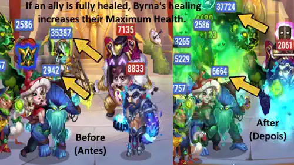
Prioridad de Evolución: Alta (2.ª en General) – Esta habilidad otorga un aumento permanente del poder defensivo de todo tu equipo, solo por detrás de maximizar su sanación/daño Definitivo.
4.º – Corazón Viviente Legendario: Nivel de Reliquia 20
La mejora de la Reliquia lleva esta poderosa habilidad de acumulación de Salud a un nuevo nivel: ahora, si un aliado está completamente curado, cualquier sanación adicional de todos los aliados aumenta su Salud Máxima. ¡Esto significa que Byrna no tiene que hacer todo el trabajo; cualquier sanador del equipo contribuye a la acumulación permanente de Salud! El efecto de aumento de Salud Máxima es del 20% del cálculo interno.
Fórmula de Corazón Viviente con el Talismán de la Bearocious
Fórmula de Corazón Viviente con el Talismán de la Princesa Orco
Información de Desbloqueo de Reliquia en Nivel 20
| Información | Valor |
|---|---|
| Fragmentos de Reliquia Necesarios (Nivel 11–20) |
800
|
| Total de Fragmentos de Reliquia Necesarios (Nivel 0–20) |
1130
|
| Bono Total de Ataque Mágico (Nivel 0–20) |
+29350
|
| Bono Total de Salud (Nivel 0–20) |
+149734
|
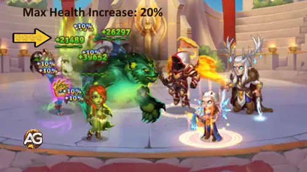
Prioridad de Evolución: Media-Alta (3.ª en General) – Es una gran mejora de sinergia, que hace que Byrna funcione mejor en equipos con múltiples sanadores. Es una mejora clave, pero debe venir después de la habilidad base y la Definitiva.
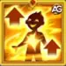
5.º – Espíritu del Don Legendario: Nivel de Reliquia 01
Esta es una nueva habilidad otorgada por la Reliquia. Espíritu del Don restaura Energía cada 6 segundos al aliado con la Energía más alta, siempre que no esté completa. Es una forma sutil pero poderosa de acelerar las habilidades Definitivas de tu equipo, apuntando al héroe que está más cerca de usar su poder. La regeneración de Energía es fija en (100) cada (6,0 segundos).
¿Por qué mejorarla? El aumento inmediato de Energía es útil, pero como la ganancia es fija y la frecuencia es baja, tiene menos impacto que sus habilidades de sanación y acumulación de estadísticas, que escalan con su atributo principal (Inteligencia).
Fórmula de Espíritu del Don con el Talismán de la Bearocious
- Fórmula: Regeneración de Energía: 100
- Fórmula: Frecuencia: 6,0 segundos
Fórmula de Espíritu del Don con el Talismán de la Princesa Orco
- Fórmula: Regeneración de Energía: 100
- Fórmula: Frecuencia: 6,0 segundos
Información de la Animación de la Habilidad
- Descripción: Restaura Energía cada 6 segundos al aliado con mayor Energía que no esté completa
Información de Desbloqueo de Reliquia en Nivel 1
| Información | Valor |
|---|---|
| Fragmentos de Reliquia Necesarios (Nivel 0–1) |
50
|
| Total de Fragmentos de Reliquia Necesarios (Nivel 0–1) |
50
|
| Bono Total de Ataque Mágico (Nivel 0–1) |
+5.645
|
| Bono Total de Salud (Nivel 0–1) |
+28.794
|
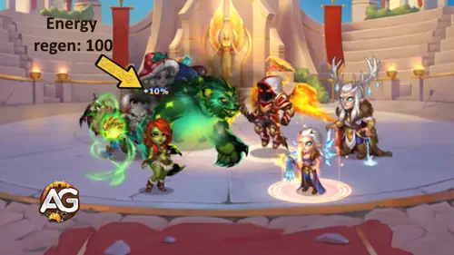
Prioridad de Evolución: Baja (7.ª en General) – El impulso de Energía es útil, pero la prioridad está en sus habilidades principales de sanación y utilidad.
6.º – Bendición de la Naturaleza Legendaria: Nivel de Reliquia 30
Esta es la habilidad definitiva de “más valor por tu inversión”. Esta nueva habilidad de Reliquia aumenta pasivamente la efectividad de la sanación de las habilidades de Byrna en un porcentaje enorme. Este aumento hace que todas sus habilidades de sanación (Rugido de la Naturaleza, Golpe del Guardián y Abrazo del Oso) sean mucho más fuertes. El incremento de sanación es del 30%.
¿Por qué mejorarla? Dado que todas sus habilidades principales se basan en sanación, un aumento del 30% potencia drásticamente todo su kit. Debe maximizarse tan pronto como sus habilidades base principales (1.ª y 4.ª) estén completas.
Fórmula de Bendición de la Naturaleza con el Talismán de la Bearocious
- Fórmula: Incremento de Sanación: 30%
Fórmula de Bendición de la Naturaleza con el Talismán de la Princesa Orco
- Fórmula: Incremento de Sanación: 30%
Información de Desbloqueo de Reliquia en Nivel 30
| Información | Valor |
|---|---|
| Fragmentos de Reliquia Necesarios (Nivel 21–30) |
1750
|
| Total de Fragmentos de Reliquia Necesarios (Nivel 0–30) |
2880
|
| Bono Total de Ataque Mágico (Nivel 0–30) |
+57570
|
| Bono Total de Salud (Nivel 0–30) |
+293704
|
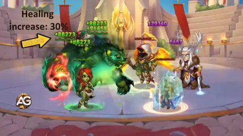
Prioridad de Evolución: Alta (Prioridad Fuerte de Segundo Nivel) – Es un enorme multiplicador de su rol de apoyo, convirtiéndola en una de las mejoras más rentables una vez que sus habilidades principales están maximizadas.
Guía del Talismán de Byrna - Hero Wars Alliance
Talismán de la Princesa Orca
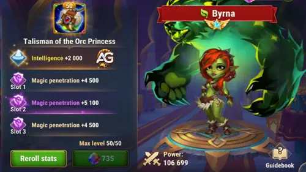
El Talismán de la Princesa Orca proporciona una poderosa +2000 de Inteligencia como estadística principal, amplificando enormemente la curación y el daño mágico de Byrna. Cada punto de Inteligencia aumenta el Ataque Mágico, la Defensa Mágica y el Ataque Físico (dado que la Inteligencia es la estadística principal de Byrna). Esto se traduce en +6000 de Ataque Mágico, +2000 de Defensa Mágica y +2000 de Ataque Físico solo por la estadística principal.
Este talismán también contiene tres ranuras para re-rodar, cada una capaz de otorgar hasta +6600 de Penetración Mágica. Sin embargo, estas ranuras deben tratarse como un valor combinado único porque lo único que realmente importa es la Penetración Mágica total después de re-rodar. Con tiradas máximas, Byrna puede obtener una increíble +19,800 de Penetración Mágica solo de este talismán.
Esto funciona perfectamente con su Habilidad Definitiva, Rugido de la Naturaleza, que inflige Daño Mágico escalando con su Ataque Mágico y activa su artefacto de arma, otorgando un adicional de +32,040 de Penetración Mágica. Juntos, estos bonos permiten que el Espíritu Guardián de Byrna atraviese las defensas enemigas con una eficiencia excepcional.
|
Talismán de la Princesa Orca |
Estadística Principal Total |
|---|---|
|
Inteligencia +2000 |
+6000 Ataque Mágico +2000 Defensa Mágica +2000 Ataque Físico |
| Ranura 1 | Ranura 2 | Ranura 3 | Bono Total por Re-rodar |
|---|---|---|---|
|
Penetración Mágica +6600 |
Penetración Mágica +6600 |
Penetración Mágica +6600 |
+19,800 Penetración Mágica |
Talismán Bearocious
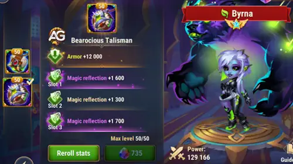
El Talismán Bearocious proporciona +12,000 Armadura como estadística principal, un bonificación puramente defensiva que aumenta la resistencia al daño físico de Byrna. A diferencia de la Princesa Orco, este talismán no aumenta la Inteligencia ni el Ataque Mágico, lo que significa que no contribuye en nada a la curación de Byrna ni al escalado de daño mágico.
Sus tres ranuras de reroll proporcionan cada una +2,200 Reflexión Mágica, para un total de +6,600 Reflexión Mágica. La Reflexión Mágica devuelve una pequeña parte del daño mágico recibido al atacante, pero la cantidad reflejada es relativamente modesta y no reduce el daño que recibe Byrna.
Si bien la bonificación de Armadura puede parecer atractiva para la supervivencia, Byrna es una heroína de soporte cuyo valor proviene de la curación y los buffs, no de absorber golpes físicos. El Talismán Bearocious no mejora ninguna de sus habilidades principales: Rugido de la Naturaleza (85% Atq.Mág.), Golpe Guardián (200% Atq.Mág.) y Abrazo de Oso (50% Atq.Mág.) escalan exclusivamente con Ataque Mágico.
|
Talismán Bearocious |
Total de Stat Principal |
|---|---|
|
Armadura +12,000 |
+12,000 Armadura Sin bonificación de Ataque Mágico, Defensa Mágica o Inteligencia |
| Ranura 1 | Ranura 2 | Ranura 3 | Bonificación Total de Reroll |
|---|---|---|---|
|
Reflexión Mágica +2,200 |
Reflexión Mágica +2,200 |
Reflexión Mágica +2,200 |
+6,600 Reflexión Mágica |
Recomendación de Talismán para PVP
| Stat | Princesa Orco | Bearocious | Diferencia |
|---|---|---|---|
| Inteligencia | 17,558 | 15,558 | +2,000 |
| Ataque Mágico | 152,136 | 146,136 | +6,000 |
| Penetración Mágica | 44,288 | 24,488 | +19,800 |
| Defensa Mágica | 35,909 | 33,909 | +2,000 |
| Armadura | 9,777 | 21,777 | +12,000 |
| Reflexión Mágica | 0 | 6,600 | +6,600 |
Mejor Talismán para PVP: Talismán de la Princesa Orco — El Talismán de la Princesa Orco es abrumadoramente superior para PVP porque todas las habilidades de Byrna escalan con Ataque Mágico, y su Espíritu Guardián hereda su Penetración Mágica. Estas son las razones:
- +19,800 Penetración Mágica — En PVP, los enemigos tienen alta Defensa Mágica. La Princesa Orco casi duplica la penetración total de Byrna (44,288 vs. 24,488), permitiendo que su Espíritu Guardián atraviese las defensas y cause daño significativo.
- +6,000 Ataque Mágico (de +2,000 Inteligencia) — Esto amplifica directamente todas las habilidades de curación: Rugido de la Naturaleza (+5,100 más curación), Golpe Guardián (+6,000 más curación por golpe) y Abrazo de Oso (+3,000 más curación por tick). En combates PVP rápidos, esta diferencia de curación a menudo decide quién sobrevive.
- +2,000 Defensa Mágica — Un bonus útil contra magos enemigos, superior a la Armadura en la mayoría de los enfrentamientos PVP donde el daño mágico domina.
- La Armadura y Reflexión Mágica del Talismán Bearocious son stats desperdiciados — Byrna es una heroína de soporte en la línea trasera/media que raramente absorbe golpes físicos. La Reflexión Mágica (+6,600) solo refleja una cantidad mínima de daño mágico sin reducir el daño que ella recibe — mucho menos impactante que las ganancias masivas ofensivas y de curación de la Princesa Orco.
El Talismán de la Princesa Orco transforma a Byrna de una sanadora decente en una potencia de PVP cuyo Espíritu Guardián destroza las defensas enemigas mientras su curación mantiene al equipo con vida. El Talismán Bearocious ofrece una supervivencia marginal a cambio de una pérdida masiva en su rol principal.
Mejor Skin para Byrna - Hero Wars Alliance
¿Listo para desatar el verdadero poder del Camino de la Naturaleza? Las skins de Byrna son cruciales para potenciar sus estadísticas principales (Inteligencia y Salud), que afectan directamente su curación, daño y supervivencia. Descubre qué skins mejorar primero para volverla imparable.

Skin por Defecto
La Skin por Defecto se enfoca en el atributo principal de Byrna: la Inteligencia. Mejorar esta skin aumenta su poder de curación, su daño mágico y su defensa mágica al mismo tiempo, convirtiéndola en la skin más importante para su función principal.
- Inteligencia: +1,365
- Ataque Mágico (por Int): +4,095
- Defensa Mágica (por Int): +1,365
- Ataque Físico (por Int): +1,365
Prioridad de Evolución: Muy Alta – Como sanadora y causante de daño basada en Inteligencia, maximizar esta estadística siempre debe ser la máxima prioridad para aumentar la efectividad de casi todas sus habilidades (Rugido de la Naturaleza, Corazón Viviente, Abrazo de Oso).
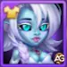
Skin Invernal
La Skin Invernal otorga un gran bono de Penetración Mágica, aumentando directamente el daño de Byrna y la efectividad de sus curaciones y debuffs basados en magia.
- Penetración Mágica: +10,650
Prioridad de Evolución: Muy Alta – Después de la Skin por Defecto (Inteligencia), esta es la mejor opción para maximizar la contribución de daño de Byrna y asegurar que sus curaciones y habilidades ignoren la Defensa Mágica enemiga. Priorízala antes que las skins de Salud pura en la mayoría de composiciones de equipo.
Por qué esto importa: El Espíritu Guardián de Byrna inflige Daño Mágico a los enemigos mientras Byrna y los aliados cercanos restauran Salud. Aumentar la Penetración Mágica hace que ese daño sea más efectivo, amplificando tanto la contribución de daño de Byrna como la curación/utilidad general que se desencadena por la interacción.
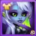
Skin Cibernética
La Skin Cibernética proporciona un gran impulso a la Salud de Byrna. Aunque es una heroína de línea media, aumentar su Salud es vital para su supervivencia, asegurando que pueda resistir el daño de área y seguir curando al equipo, especialmente contra ráfagas inesperadas de agresión enemiga.
- Salud: +106,645
Prioridad de Evolución: Alta – La supervivencia es el segundo factor más crucial para cualquier héroe de apoyo. Si Byrna muere, todo el mecanismo de curación y acumulación de salud se detiene. Máximala inmediatamente después de su Skin por Defecto (Inteligencia).
Skin Tribal+ (Skin+)
La Skin Tribal+ es la 4ª skin de Byrna y su skin ofensiva más poderosa. Es una variante Skin+, lo que significa que combina la Skin Tribal base (Ataque Mágico +10,650) con la mejora Skin Tribal+, duplicando efectivamente las estadísticas cuando está equipada — para un total de +21,300 de Ataque Mágico.
- Ataque Mágico (Tribal base): +10,650
- Ataque Mágico (Skin Tribal+): +21,300 (duplicado al equipar la Skin+)
Prioridad de Evolución: Extremadamente Alta (Mejor Skin) – Con +21,300 de Ataque Mágico, esta es con diferencia la skin más impactante para Byrna. El Ataque Mágico escala directamente TODAS sus habilidades de curación y daño: Rugido de la Naturaleza (85% AM), Golpe Guardián (200% AM), Abrazo de Oso (50% AM) y la acumulación permanente de Salud de Corazón Viviente. Esta skin sola proporciona más poder ofensivo y de curación bruto que cualquier otra skin.
Consejos de Alexandre: La Skin Tribal base se puede comprar con Certificados de Skin después de 6 meses del lanzamiento del héroe — esta parte es accesible para jugadores gratuitos. Sin embargo, la mejora Skin+ es mucho más difícil de obtener. La mejor oportunidad es durante el evento de lanzamiento cuando la Skin+ se presenta por primera vez. Después del evento, la Skin+ solo se puede obtener con suerte en el Cofre Heroico, lo que la hace significativamente más difícil de adquirir. ¡Si es posible, prioriza conseguir la Skin+ durante su evento de lanzamiento!
Prioridad de Evolución de Artefactos de Byrna - Hero Wars Alliance
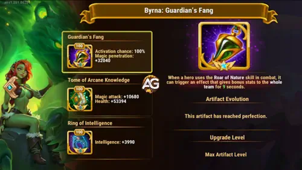
¿Listo para enfocar el poder natural puro de Byrna? Los artefactos son clave para potenciar las estadísticas que hacen que sus curaciones sean colosales y la supervivencia de su equipo sea inigualable. Priorizarlos aumentará drásticamente su utilidad general en el campo de batalla.
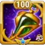
1º - Artefacto de Arma: Colmillo del Guardián
Este artefacto proporciona un gran impulso a la Penetración Mágica, una estadística ofensiva crucial para los héroes de Inteligencia. Fundamentalmente, su efecto se activa con garantía (100% de probabilidad) cuando Byrna usa su habilidad definitiva, Rugido de la Naturaleza, otorgando un bono temporal a todo el equipo.
- Penetración Mágica: +32,040
- Probabilidad de Activación: 100% (Se activa con la Definitiva)
Prioridad de Evolución: Muy Alta – Este es el artefacto más vital de Byrna. Como heroína de apoyo que también inflige un daño mágico significativo, aumentar su Penetración Mágica es primordial. Asegura que el daño de su espíritu oso (Rugido de la Naturaleza y Puño Guardián) no sea anulado por la Defensa Mágica enemiga, y la activación del 100% del bono de equipo es invaluable para la sinergia del equipo.

2º - Artefacto de Libro: Tomo del Conocimiento Arcano
El artefacto de Libro es esencial ya que proporciona una gran mezcla de estadísticas base que Byrna necesita: Ataque Mágico y Salud. Aumentar el Ataque Mágico amplifica directamente su curación y utilidad general, mientras que la Salud proporciona la supervivencia necesaria.
- Ataque Mágico: +10,680
- Salud: +53,394
Prioridad de Evolución: Alta – Proporciona un impulso base necesario a su Ataque Mágico, aumentando directamente la potencia de sus curaciones y daño, y Salud crucial para su supervivencia. Es una mejora fundamental para su efectividad.

3º - Artefacto de Anillo: Anillo de Inteligencia
El artefacto de Anillo potencia directamente la estadística principal de Byrna, la Inteligencia. Aumentar esta estadística eleva su Ataque Mágico, Defensa Mágica e incluso Ataque Físico, mejorando la efectividad de casi todas sus habilidades.
- Inteligencia: +3,990
- Ataque Mágico (por Int): +11,970
- Defensa Mágica (por Int): +3,990
- Ataque Físico (por Int): +3,990
Prioridad de Evolución: Media Alta – Si bien el Anillo proporciona el mayor impulso directo a su Inteligencia (la estadística con la que escalan sus habilidades), primero se prioriza la utilidad de equipo del Arma y la Penetración Mágica, seguidas de las estadísticas base puras del Libro. El Anillo es el tercer paso para solidificar su escalado.
Prioridad de Evolución de Glifos de Byrna
¡Desbloquear el verdadero potencial de Byrna significa enfocarse en las estadísticas que potencian su mecánica única de curación y acumulación de salud! Los glifos proporcionan poder estadístico puro, lo que los hace cruciales para aumentar su utilidad y garantizar que se mantenga viva el tiempo suficiente para cambiar el rumbo de la batalla.
1º - Glifo de Ataque Mágico:
El Ataque Mágico (AM) es la estadística de escalado más crucial para Byrna. Cada una de sus habilidades de curación y daño (Rugido de la Naturaleza, Puño Guardián, Abrazo de Oso y la acumulación permanente de Salud de Corazón Viviente) escala directamente con su AM. Maximizar esta estadística asegura que todas sus habilidades principales alcancen su máximo potencial.
Estadísticas Nivel 80: +12,850 de Ataque Mágico.
Prioridad de Evolución: Muy Alta (1º en General) – Esta es su máxima prioridad porque mejora simultáneamente su rol principal (curación/apoyo) y su rol secundario (daño).
2º - Glifo de Salud:
La Salud es la base de la supervivencia. Como heroína de apoyo de línea media, Byrna necesita un gran grupo de Salud para resistir el daño de área (AoE) y seguir apoyando a su equipo. Una sanadora muerta es inútil, sin importar cuán poderosas sean sus estadísticas de curación.
Estadísticas Nivel 80: +122,800 de Salud.
Prioridad de Evolución: Alta (2º en General) – La supervivencia viene inmediatamente después de su estadística de escalado principal. La gran cantidad de Salud obtenida aquí es necesaria para asegurar que permanezca en el campo de batalla para acumular salud permanente a través de Corazón Viviente.
3º - Glifo de Defensa Mágica:
La Defensa Mágica (DM) reduce el daño que Byrna recibe de los magos enemigos y los héroes basados en Ataque Mágico. Aunque no es tan importante como la Salud, protegerla del daño mágico es crucial en el meta actual, donde muchos poderosos causantes de daño usan AM.
Estadísticas Nivel 80: +12,850 de Defensa Mágica.
Prioridad de Evolución: Media (4º en General) – La supervivencia (Salud) es una prioridad mayor, pero la DM es una excelente estadística defensiva secundaria. Debe ser subida después de los glifos de ataque y supervivencia primarios.
4º - Glifo de Penetración Mágica:
La Penetración Mágica (PM) permite que las habilidades causantes de daño de Byrna (Rugido de la Naturaleza, Puño Guardián) ignoren la Defensa Mágica del enemigo. Si bien es principalmente una sanadora, la PM asegura que su daño explosivo sea efectivo contra tanques y héroes de utilidad.
Estadísticas Nivel 80: +12,850 de Penetración Mágica.
Prioridad de Evolución: Media Alta (3º en General) – Aunque Byrna es de apoyo, sus contribuciones de daño son importantes, especialmente con el bono de Penetración Mágica de su Artefacto de Arma. Debido a esta sinergia, es ligeramente más importante que la Defensa Mágica pura para asegurar que su daño contribuya de manera significativa.
5º - Glifo de Inteligencia:
La Inteligencia es la estadística principal de Byrna. Subir este glifo proporciona un impulso multifacético significativo, ya que cada punto le otorga Ataque Mágico, Defensa Mágica y Ataque Físico.
- Inteligencia: +2,110
- Ataque Mágico (por Int): +6,330
- Defensa Mágica (por Int): +2,110
- Ataque Físico (por Int): +2,110
Prioridad de Evolución: Media (5º en General) – Si bien la Inteligencia es su estadística principal, el Glifo de Ataque Mágico (1ª prioridad) otorga un bono de Ataque Mágico puro mayor. Este Glifo de Inteligencia debe ser subido después de las tres principales prioridades para obtener los beneficios defensivos secundarios (DM) y de Ataque Físico.
Mejores Equipos para Byrna - Hero Wars Alliance
Mejores Equipos Defensivos para Byrna
- Satori, Byrna, Xe'sha, Somna, Aidan
- Yasmine, Satori, Byrna, Somna, Octavia
- Electra, Byrna, Somna, Folio, Cornelius
Mejores Equipos Ofensivos para Byrna
- Polaris, Folio, Byrna, Oya, Electra
- Polaris, Folio, Somna, Byrna, Electra
- Aidan, Peech, Byrna, Kayla, Electra
- Polaris, Folio, Juez, Byrna, Julius
- Sin Rostro, Jorgen, Byrna, Satori, Astaroth
Conclusión
Byrna entra en Hero Wars: Alliance como una heroína de apoyo única y poderosa, que combina curación constante, regeneración de energía y un Espíritu Guardián versátil que refuerza tanto la ofensiva como la supervivencia. Su kit escala extremadamente bien con Ataque Mágico e Inteligencia, lo que la convierte en una fuerte inversión a largo plazo para muchas composiciones de equipo.
Su rol meta final aún se está desarrollando. A medida que más jugadores la prueben en diferentes modos (Arena, Arena Grande, Guerras de Guild y Aventuras) obtendremos una comprensión más clara de sus mejores builds, compañeros ideales y prioridades.
Por ahora, Byrna ya muestra un potencial tremendo como una de las heroínas de apoyo de sustento más confiables del juego. Si disfrutas de equipos duraderos centrados en la curación, ella es absolutamente una heroína que vale la pena subir y con la que experimentar a medida que evoluciona el meta.
Video suggestion
¡Explora nuevas habilidades con nuestros héroes destacados!
 Guía de la rework de Jhu – El guerrero imparable de Hero Wars Alliance(EN)
Guía de la rework de Jhu – El guerrero imparable de Hero Wars Alliance(EN)

Comparte tu opinión
¿Te ayudó esta guía de Byrna? Si tienes dudas o quieres proponer nuevas composiciones, únete a la comunidad de Alexandre Games en los comentarios. Comparte tus estrategias y pide consejo cuando lo necesites.
Haz clic en el botón para comenzar: